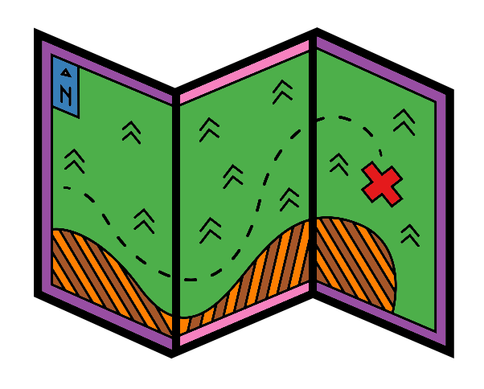
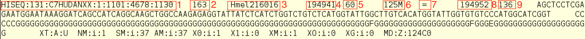
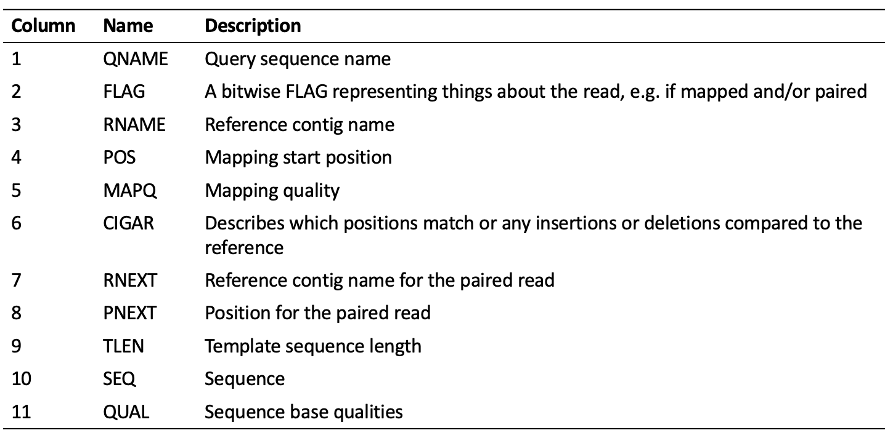
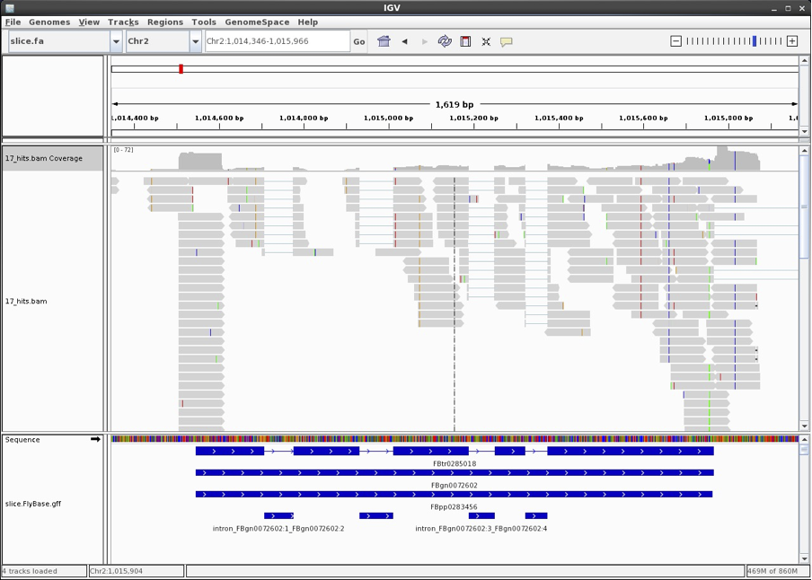

Chapter 5 Aligning Illumina transcriptome data to a reference genome
HISAT2 is a fast and memory efficient alignment program for mapping next-generation sequencing reads (whole-genome, transcriptome, and exome sequencing data) against a reference genome. It is also a splice-aware aligner. Splice-aware aligners map reads over exon/intro junctions and are appropriate for aligning reads to a genome reference. Splice-unaware aligners are not aware of exon/intron junctions and are therefore only appropriate for mapping RNA-sequencing data to a transcriptome.
5.1 Reference sequence preparation

HISAT2 uses indexing of the reference genome to speed up the mapping. The index needs to be prepared before we map our reads. To index the genome run
This produces index files with the extension '.ht2' that will be automatically detected and used in the mapping step below.
5.2 Read mapping

Now we are ready to map our reads. First make a directory for our output.
To map our paired-end, trimmed reads type the following:
hisat2 \
-x slice \
-1 trimmed/17_slice_R1_out_paired.fastq \
-2 trimmed/17_slice_R2_out_paired.fastq \
-p 8 \
-q \
--met-file aligned/17_slice.stats | \
samtools sort -O BAM > \
aligned/17_slice.sorted.bamThe options used are:
-x The index filename prefix
-1 Path to forward paired-end reads to use for aligning
-2 Path to reverse paired-end reads to use for aligning.
-p Use this many threads to align reads. The default is 1
-q Reads are FASTQ files. FASTQ files usually have extension .fq or .fastq. FASTQ is the default format
--met-file path Write hisat2 metrics to file. Having alignment metrics can be useful for debugging certain problems, especially performance issues. See also: --met. Default: metrics disabled.
There are many different mapping parameters you can specify, see here. While it is often sufficient to run HISAT2 with default settings, we recommend reading the manual and considering your own dataset carefully when running any analysis.
HISAT2 outputs a SAM file (Sequence Alignment Map format). However, here we pipe the output to samtools, a program for writing, viewing and manipulating alignment files, to sort and generate a BAM format, a binary, compressed version of SAM format. This sorts the SAM file by position (this is the default) and outputs it as a BAM file to save space.
We can view this file using samtools view, and head to display only the first few lines:
The header section consists of lines starting with '@'. In this case we have a header line showing the SAM/BAM format version (@HD VN:), information on the reference sequence (@SQ) contig names (SN:) and lengths (LN:) and program information on how the SAM/BAM file was generated (@PG).
To look at the information in the alignment section we can leave out the -h option:
Here is an example of one line, representing information from one sequence read.

Each column contains information on where and how well the read aligns to the reference. After column 11 there can be several optional tags, often specific to the aligner used and can be useful for downstream analysis.

The image above is from a different alignment file to the one you have generated here. On the first line of your alignment file what is the query sequence name? What is the reference contig name?
5.3 Assess mapping quality

We can use the Samtools command flagstat to find information on how the reads mapped:
This information is a summary of the 'FLAG' values - the second field in the sam/bam file. These values can be used if you want to extract or exclude a specific set of reads for downstream analysis. Here we will run a command that will keep only high quality, unique alignments and discard unmapped reads and unmapped mates.
mkdir aligned_clean
samtools view -b -q 40 -f 2 \
-F 12 aligned/17_slice.sorted.bam > \
aligned_clean/17_slice.sorted.clean.bamThe options used are:
-b output in bam format
-q have a mapping quality greater or equal to the number specified
-f to include the reads with the specified flag
-F only include reads without this flag
The Broad Institute has a useful website to interpret the FLAG values, likewise they are listed in the samtools documentation.
Run flagstat on the bam file from which we have excluded unmapped reads.
- How many reads are in the cleaned file in total?
- What proportion of the reads in this file are now mapped?
5.4 Visualising the mapping
To get a better feel for the mapping we have just done, we will visualise our mappings in IGV, the Integrative Genomics Viewer.
First, we need to index the BAM file in order for the viewer to rapidly go to any bit of the genome:
To launch IGV first open a new terminal window: right click on the main screen, choose Terminal and load the conda environment . usernaseq
Then type:
The & (ampersand) opens IGV “in the background’, so you can still enter commands in the terminal window if you want.
Once IGV has opened (this can take a few minutes) import the genome, mapped reads and gene annotations:
To import the genome:
- Select ‘Genomes’ -> ‘Load Genome from File…’.
- Select slice.fa (which should be in rnaseq/Practical_one).
- Click [Open].
To import the mapped reads:
- Select ‘File’ -> ‘Load from File…’.
- Select 17_slice.sorted.clean.bam (which should be in rnaseq/Practical_one/aligned_clean).
- Click [Open].
To import the gene annotations:
- Select ‘File’ -> ‘Load from File…’.
- Select slice.FlyBase.gff (which should be in rnaseq/Practical_one).
- Click [Open].
And show this track in ‘expanded’ mode:
- Right-click on the slice.FlyBase.gff track label.
- Select ‘Expanded’.
Now type Chr2:1,014,346-1,015,966 into the white box with ‘Go’ next to it.
You should now be looking at gene FBgn0072602: 
Mapped reads are shown as fat grey arrows. Some of these are split across an intron. The blue track at the bottom shows the FlyBase gene annotations.
You can move to different parts of the genome and you may see that some reads map well to the gene models and some don’t. The latter will be due to a combination of 5’ and 3’-UTRs (which are not part of the gene annotations), reads transcribed from non-coding DNA, transposons, or from regions where the gene prediction program used to generate the models has missed a gene. The RNA-seq data here can be used to refine gene models, but that’s beyond the scope of this practical.